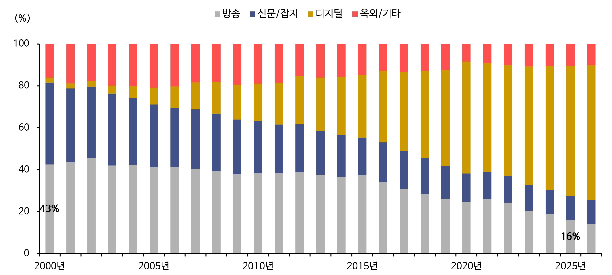
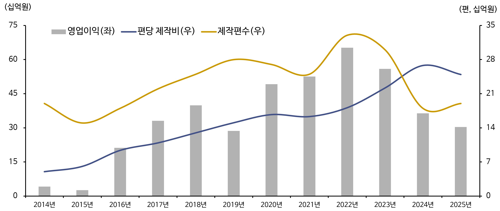
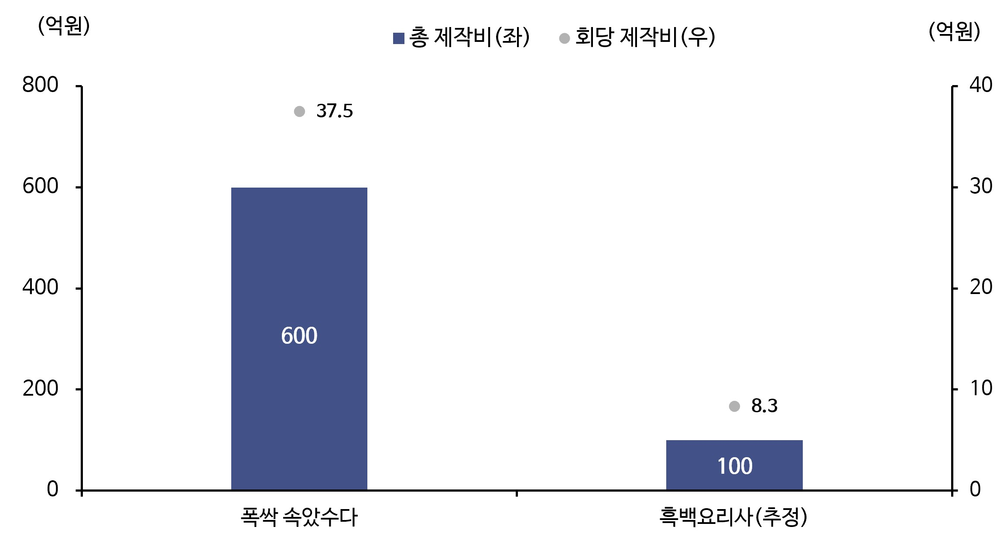

“돈을 따르라(Follow the money)”. 1976년 개봉한 영화 <모두가 대통령의 사람들>에서 익명의 제보자 ‘딥 스로트’가 진실에 다가가려는 기자에게 건넨 말이다. 미국의 워터게이트 스캔들을 다루며 탐사 보도의 바이블이 된 이 영화의 명대사는 ‘돈의 출처와 흐름을 추적하면 그곳에 진실이 있다’는 자본주의 사회를 설명하는 명제이자, 산업과 시장을 읽는 불변의 원칙이 되었다.
미디어 산업이 다른 산업과 다른 점은 돈의 흐름과 사람의 흐름을 함께 읽어야 한다는 것이다. 미디어 시장은 콘텐츠를 거래하는 시장과 사람의 노출을 거래하는 시장으로 이루어진 이중 상품 시장 구조이며, 두 시장은 피드백 루프로 연결되어 있다. 이 점이 미디어 산업의 설명과 예측을 어렵게 만든다. 일반적으로 많은 자본이 양질의 콘텐츠를 만들고, 양질의 콘텐츠는 오디언스를 끌어 모은다. 그러나 오디언스의 흐름은 돈의 흐름이 예측한 대로 가지 않는다. 막대한 돈이 투입된 콘텐츠가 실패하기도 하고, 적은 투자로 만든 콘텐츠가 성공하기도 한다. 오디언스의 주목과 경험이 다시 돈의 흐름과 성격을 바꾸어 버리기 때문이다. 이제 바뀌어 버린 돈은 광고비라는 이름으로 다시 흐르고, 일부는 다시 콘텐츠 제작으로 흘러가 선순환을 만든다. 실제로 방송산업은 지난 5년 간 시청자 수 및 시청시간의 감소로 방송광고시장 내 점유율이 26%에서 16%로 축소되었으며([그림 1] 참고), 넷플릭스는 막대한 콘텐츠 투자와 독점 오리지널 공급으로 단기간에 구독자를 모아 업계의 위치를 굳혔음에도 불구하고 가입자 성장 정체와 제작비 부담으로 인한 수익성 악화로 십 수년간 고수해 온 구독 중심 수익 모델을 바꾸고 광고 기반 요금제를 도입해 비즈니스 모델을 다변화하고 있다.

[그림 1] 2021~2025 방송시장 지표
(출처: Nielsen Korea(개인, 전국 기준 시청률 및 시청 시간), 방송통신광고비(2021~2025(e). 매체 유형별 광고비)
이제 미디어 시장의 돈이 흘러가는 방향과 규모는 오디언스가 어디에 머물고 있는지에 따라 결정된다. 오랜 시간 동안 오디언스의 주목을 예측하는 가장 중요한 요소는 ‘좋은 콘텐츠’였다. 하지만 AI가 콘텐츠 제작과 유통의 판도를 바꾸는 현재, 이 주목이 어디로 흐를지 예측하는 일 자체가 어려워졌다. AI는 새로운 콘텐츠와 플랫폼을 쏟아내고, 콘텐츠로 특화되던 플랫폼 간 경계도 허물었다. 이제 미디어 산업 내 경쟁을 관통하는 질문은 이제 ‘누가 더 좋은 콘텐츠를 만드는가’에서 ‘누가 오디언스의 주목(attention)을 더 오래 붙잡아 두는가’로 옮겨 가고 있다.
“우리의 최대 경쟁 상대는 디즈니(Disney)가 아니라 인간의 잠(sleep)이다.” 2017년 4분기 실적 발표장에서 던진 넷플릭스의 창업자의 말을 두고, 미디어 시장 내 전문가들은 플랫폼이 오디언스의 한정된 시간과 집중력을 독점하려는 주목 경제(Attention Economy)를 선언하는 말이라고 해석했다.
이제 플랫폼들은 막대한 자본을 들여 질 좋은 콘텐츠를 내놓는 방식보다, 알고리즘 기술력을 앞세워 적은 콘텐츠 투자만으로도 주목을 붙잡는 방식을 택하게 되었다. 넷플릭스의 ‘90초 룰’ 역시 같은 맥락이다. 2016년 발표된 이 자료에서 넷플릭스는 이용자가 한 썸네일을 살펴보는 데 평균 1.8초를 쓰고, 약 90초 안에 관심을 얻지 못하면 다른 활동으로 떠난다고 밝혔다.
즉 오디언스의 주목을 건 승부는 90초 안에 결정되기 때문에 개인화된 썸네일 이미지 실험과 개인 맞춤형 추천 시스템에 역량을 쏟아 부어야 한다는 것이다.
넷플릭스가 ‘90초 룰’을 세우고 화면 뒤에서 치열한 알고리즘 연출을 벌이는 동안, 모바일 기반의 플랫폼들은 이미 인간의 인지적 브레이크를 제거하는 강력한 무기인 ‘무한 스크롤(Infinite Scroll)’을 개발해 냈다. 무한 스크롤 알고리즘은 초기 다음 페이지를 누르는 수고를 덜어 끊김 없는 사용자 경험을 위해 고안된 기술이었지만, 틱톡(TikTok)과 유튜브 쇼츠와 같은 숏폼과 결합하면서 오디언스의 주목을 그대로 결박하는 장치가 되었다. 이러한 숏폼의 힘은 한 편의 길이보다 AI 추천 피드로 연속 시청을 만드는 구조에 있다. 실제 국내 모바일 이용 지표를 제공하는 모바일 인덱스의 조사에 따르면 26년 7월 기준, 숏폼 플랫폼인 틱톡의 인당 월 평균 사용시간은 649분으로 넷플릭스의 527분을 추월했고, 숏폼 드라마 플랫폼인 드라마박스의 월평균 사용 시간은 232분으로 디즈니 플러스(156분)보다 길었다.

[그림 2] 플랫폼별 월간(2026.07) 1인당 평균 시청 시간(분)
(출처: 모바일 인덱스(2026.07). 안드로이드+IOS 추정. 이민주(2026.08.09). 넷플·티빙 다 합쳐도 유튜브 못 이겼다…콘텐츠 시장 '숏폼 vs 롱폼' 재편. 뉴스1에서 발췌)
돈의 흐름을 만들어내는 오디언스의 주목을 잡아 두는 것이 알고리즘 기술이라 하지만 사실 알고리즘은 수단에 불과하며 진짜 엔진은 초개인화 기술이다. 초개인화는 오디언스를 실시간 수천 단위로 시시각각 분석해 무엇을 보려 하고, 무엇을 하려 하는지 오디언스 자신보다 먼저 알아낸다. AI로 추천 모델이 정교해지고 개인 맞춤 콘텐츠가 실시간으로 만들어지면 오디언스가 좋아할 것과 실제로 보여지는 것 사이의 거리는 점점 줄어들게 되고 결국 돈의 흐름을 만드는 오디언스의 시선은 플랫폼의 기술에 크게 좌우된다.
초개인화는 기존의 개인화 서비스와 체급이 다르다. 개인화 서비스가 축적된 데이터로 비슷한 유형의 사람을 묶어 타깃팅 했다면, 초개인화는 한 사람의 상황과 맥락에 따라 실시간으로 다른 서비스를 제공한다. 아마존(Amazon)이 고객의 수많은 행동과 패턴을 수집하고, AI로 학습해 구매 확률을 분석한 서비스를 내놓으며 언급한 ‘0.1명을 위한 세그멘테이션’이 바로 그것이다. 2020년 전후 소개된 이 개념은 이제 AI와 만나 더 진화했고, 오디언스를 시간과 장소, 상황에 따라 다양한 정체성을 가진 복합적 개체로 분석해 이른바 멀티 페르소나 마케팅과 결합했다. 이제 오디언스는 본인조차 인식하지 못한 취향과 해야 할 행동을 먼저 제안받는다.
광고주의 질문도 바뀌었다. 과거 광고주가 가장 많이 던진 질문은 “얼마나 많은 사람이 보나요?”였다. 이제 광고주의 질문은 핵심 소비자 집단을 묻는 “누가 보나요”에서 “누가, 언제, 어떤 맥락에서 보나요?”로 더 구체화됐다. 불특정 다수를 찾아 흘러가던 돈은 이제 수많은 데이터로 정의된 세밀한 개인을 찾는다. 오디언스는 시청률 속 숫자인 대중에서 시장의 핵심 소비자 집단인 ‘타깃’으로, 다시 타깃의 한 맥락을 인물로 구체화한 ‘페르소나’로 얼굴이 바뀌었다.
이 지점에서 돈의 흐름을 결정하는 방향이 뒤집힌다. 광고주의 돈은 오디언스의 주목을 따라 움직이지만, 오디언스를 가장 정확하게 볼 수 있는 쪽은 플랫폼이다. 로그인 계정과 이용·행동 기록을 쥔 플랫폼 안에서 광고주는 오디언스에게 닿는 노출을 산다. 하지만 그 타깃은 플랫폼이 개인의 관심과 행동을 세밀히 분석해 다시 데이터로 조립된 프로필이다. 한 개인은 최근 식료품을 구매한 30대 가구가 되기도 하고, 자정 이후 여행 상품을 검색한 사람이 되기도 한다. 광고주의 타깃은 그만큼 더 정교화되고, 타깃이 세밀해질수록 노출 하나의 값은 희소성과 데이터의 질로 정해진다. 가령 가구 단위의 무작위 노출은 낮은 가격에 팔리고, 구매 이력이 확인된 특정인에게 닿는 노출은 훨씬 높은 가격에 팔린다.
예시를 들어보자. 2026년 2분기 미국 CTV의 평균 CPM은 평균 26달러로 보고되는데, 이를 들여다보면 일반 인벤토리의 CPM은 대체로 15~25달러이고, 프로그래매틱 프리미엄 인벤토리는 25~45달러로 제시된다.
타깃 방식에 따라서도 차이가 난다. 아마존 오디언스 데이터는 5~15달러, 구매 행동 기반 타깃팅은 10~25달러, 유사 고객 타깃팅은 8~20달러를 더한다. 기존 인벤토리에 1st Party 데이터를 결합하면 45~85달러까지 올라간다는 추정도 있다.

[그림 3] 미국 CTV 광고 유형 별 CPM 추정 단가
* CPM = 광고 노출 1,000회당 비용 (단위: 미국 달러)
(출처: David Naffis (2026.07.21.). What Is the Average CTV CPM? Q2 2026 Pricing Data. Adwave)
단가가 올라가는 이유는 초개인화 기술에 의해 오디언스의 가치가 한 겹 더 쌓이기 때문이다. 앞서 언급했듯 플랫폼은 오디언스가 머무는 시간과 주목을 잡아 두고, 그 시간을 누가 채우는지 정교하게 나누어 타깃을 만든다. 세밀히 쪼개진 타깃은 희소성과 데이터의 질에 따라 가격표의 다른 칸에 놓인다. 같은 타깃이라도 구매 이력이 분명하거나 특정 상품에 반응한 기록이 있다면, 그 노출은 더 높은 가격에 팔린다. 나아가 이 과정에는 타깃을 세밀하게 겨냥하는 기술이 비용을 가져가는 중간 단계도 생긴다. 수요 측 플랫폼(Demand-Side Platform; DSP)은 매체비의 10~20%를 수수료로 가져가고, 데이터와 검증 비용이 여기에 더해진다. 타깃은 오디언스에서 출발해 플랫폼과 데이터 중개자를 거쳐 광고주에게 도착하며, 단계가 추가될수록 비용과 가치는 더해진다.
“돈을 따르라(Follow the money).”
광고비는 언제나 오디언스의 주목을 따라 움직였다. 신문에서 TV로, TV에서 모바일로, 다시 영상 스트리밍과 숏폼으로 옮겨 간 돈의 방향은 오디언스가 어디에 머무는지를 기록한 지도와 같았다. 이제 그 지도는 플랫폼 안에서 다시 그려지고 있다. 추천 알고리즘이 주목을 붙잡고, 초개인화 기술이 그 주목을 세밀한 타깃으로 나누며, 타깃은 페르소나 마케팅과 결합해 더욱 구체화되고, 구체화된 타깃의 가치는 광고 단가로 매겨진다.
돈이 어디로 흐를지, 그 방향을 주체적으로 결정했던 오디언스는 이제 다양한 감정과 경험, 그리고 (철저히 계산된) 취향을 얻는 대신, 머무름의 시간과 흔적의 기록, 그리고 선택의 권한을 플랫폼에 내놓는다. 플랫폼안에서 이 세가지는 수동적 대상인 타깃이라는 얼굴로 또 다른 돈의 흐름을 만든다. 여기서 돈의 흐름의 주체는 철저하게 계산되어 세밀하게 쪼개진 데이터 속 타깃이다. 이제 돈의 흐름은 취향의 오디언스와 기술의 플랫폼의 팽팽한 긴장 속에 형성된다.
하지만 잊지 말아야 할 것이 있다. 비록 플랫폼이 AI 기술을 총동원해 오디언스를 가두고 초 개인화 연금술을 부려 돈의 흐름을 바꾼다고 하더라도 원자재는 오디언스라는 점은 변함이 없으며, 이 돈의 흐름은 원자재의 신뢰를 담보로 할 때만 지속 가능하다는 점이다. 오디언스와 플랫폼의 긴장 관계는 결국 ‘예측하려는 기술’과 ‘예측 불가능한 인간’ 사이에 벌어지는 일이기에 플랫폼이 AI 기술로 오디언스를 취향의 방에 가두려 할수록, 오디언스는 무의식적인 알고리즘의 유도에 피로감을 느끼며 이탈하거나 의도적으로 맥락을 교란하는 저항을 할 수도 있다. 돈의 흐름을 쫓아 도달한 미디어 산업의 종착지는 결국 기술의 고도화가 아닌 데이터 뒤에 숨겨진 인간의 복잡한 맥락을 얼마나 견고한 비즈니스 모델로 흡수할 수 있는가라는 본질적인 질문으로 귀결된다. 결국 진실을 찾기 위해 따라간 돈이 돌고 돌아 그 끝에 닿은 것은 여전히 오디언스라는 것이다. 그렇다면 우리가 던져야 할 진짜 질문은 하나뿐이다.
참고문헌
- 남지연(2023, 1, 25). 나보다 나를 더 잘 아는 맞춤 서비스의 등장. <한경Money>.
- 이민주(2026, 8, 9). 넷플·티빙 다 합쳐도 유튜브 못 이겼다…콘텐츠 시장 ‘숏폼 vs 롱폼’ 재편. <뉴스1>.
- David Naffis(2026, 7, 21). What Is the Average CTV CPM? Q2 2026 Pricing Data. <Adwave>.
- Ishan Manchanda(2026, 9, 28). Connected TV (CTV) & Programmatic Advertising for B2B SaaS 2026: Costs, Account-Based Targeting, and How to Measure It.
- Tim Stenovec(2026, 2, 19). Netflix knows exactly how long it has before it loses you. <Business Insider>.
- Zhifeng Gao(2026, 3, 26). How Netflix Stays on Top: Solving the Attention Economy Problem in the Digital Age. <Medium>.